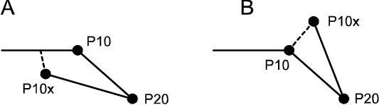
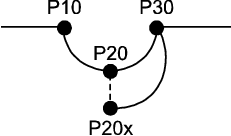

通过将机器人微调至新位置来修改位置时，您可以将程序单步至您要修改的位置，或直接微调至新位置，并更改指令的相应位置变元。
建议将程序单步执行至该位置，但如果您对机器人程序非常熟悉，并且新位置已确定，则使用微动控制方法更为快捷。
 | 注意 切勿使用此方法更改方向值。 |
要使用“程序编辑器”或“运行时窗口”修改位置：
系统必须处于手动模式
目标位置必须具有一个初始值。例如： CONST robtarget p10:=[[515.00,0.00,712.00],[0.707107,0,0.707107,0],[0,0,0,0], [9E+09,9E+09,9E+09,9E+09,9E+09,9E+09]]; CONST jointtarget jpos10:=[[-0,-0,0,-0,-0,-0], [9E+09,9E+09,9E+09,9E+09,9E+09,9E+09]];
| 注意 要在“运行时窗口”中修改位置，程序必须已启动，以便于设置动作指针。 |
修改过的位置值通常在您重新启动程序时使用。 如果在启动时机器人不能直接使用这些值，会显示一个警告。 然后下次在程序中使用该位置时将使用修改过的位置。
本程序介绍如何使用单步进到位置或微动控制来修改位置。您可以使用 Program Editor（程序编辑器）或 Production Window（运行时窗口），效果一样。
操作 | Information | |||
1 | 在 ABB 菜单中，点击 Program Editor（程序编辑器）。 | |||
2 | 停止运行的程序。 | |||
3 | 您希望单步到此位置还是进行微动控制？ 如是单步，请步进程序至您要更改的位置。 确保选择正确的变元。 如果使用微动控制，请使用 Jogging（微动控制）视图来确保选择与说明中相同的工件和工具。 | 单步时，如果指令或过程调用拥有一个以上的位置变元，则继续单步，以便达到每个变元。 | ||
4 | 移至新的位置。 | |||
5 | 使用微动控制方法时，点选您要更改的位置变元。 | |||
6 | 在 Program Editor（程序编辑器）中，点击 Modify Position（修改位置）。 在 Production Window（运行时窗口）中，点击 Debug（调试），然后点击 Modify Position（修改位置）。 一个配置对话框出现。 | 在以某一变量进行索引的数组中修改位置时，您必须在执行修改前选择哪些数组元素要进行修改。 | ||
7 | 点击 Modify（修改）使用新的位置，点击 Cancel（取消）保留原值。 | 在确认对话框中，如果您勾选了 Don’t show this dialog again（不再显示此对话）复选框，则在修改位置后将不再弹出任何确认对话框。
| ||
8 | 重复步骤 3 到 7 更改每个需要更改的位置变元。 |
Program Editor（程序编辑器）中的 Modify position（修改位置）按钮将被禁用，直到您选择了位置变元（可以修改）。
Production Window（运行时窗口）中的 Modify position（修改位置）按钮将被禁用，直到设置了动作指针得并选择了一个位置。要设置动作指针，必须先启动然后停止程序。
最大方向移动或方向更改可能会受到系统设计中系统参数（主题 Controller，类型 ModPos Settings）的限制。 详情请阅读车间或工厂的说明文档。
如果系统参数设置为使用绝对限值进行位置更改，则仅能使用 HotEdit 中的基准菜单恢复或更改原始位置。 基准概念请参阅利用 HotEdit 调节位置一节。
如果已命名的位置已修改，则所有使用该位置的指令都将受到影响。
在 Production Window（运行时窗口）中，不能在同步模式中更改圆点。请参阅应用手册 - MultiMove。
在 Program Editor（程序编辑器）和 Production Window（运行时窗口）中，修改位置的程序是相同的。但是，选择位置的方式不同。
并且，如果系统使用了 MultiMove，那么 Program Editor（程序编辑器）和 Production Window（运行时窗口）中的结果也会不同。请参阅 应用手册 - MultiMove。
在 Program Editor（程序编辑器）中，点击所需位置即可选择要修改的位置。
在 Production Window（运行时窗口）中，您必须将程序步进至所需位置来选择要修改的位置。
| 注意 如果您从另一个窗口执行程序，然后切回 Production Window（运行时窗口），所选位置将更改为动作指针当前所在的位置。请确保选取了正确的位置，然后再进行修改！! |
关于如何修改位置的简述，请参见修改和调节位置。
有关 HotEdit 和基准的说明，请参阅利用 HotEdit 调节位置。
有关 HotEdit 菜单的详情，请参阅 HotEdit 菜单 。
有关在 Program Data（程序数据）窗口中修改位置的详情，请参阅编辑数据实例。
技术参考手册 - RAPID指令、函数和数据类型。
技术参考手册 - 系统参数。
应用手册 - MultiMove
下面的示例显示在修改位置时将如何影响计划的路径。
在示例 A 中，机器人在到达位置 P10 之前停止在路径上。 机器人微动控制离开路径到新的位置 (P10x)，并且位置 P10 被修改。
在示例 B 中，机器人停在路径上的位置 P10 处。 机器人微动控制离开路径到新的位置 (P10x)，并且位置 P10 被修改。

两个示例中，在重新启动程序时，机器人从新的 P10（现在与 P10x 相同）直接继续运动至 P20，而不必返回到以前计划的路径（通过旧的 P10）。
在本示例中，机器人停在路径上的位置 P20（圆点）处，然后微动控制至新的位置 P20x。位置 P20 被修改。

非同步模式下，在单个机器人系统或 MultiMove 系统中：在重新启动程序时，机器人直接从新的 P20（现在与 P20x 同）到 P30 继续，而不返回至以前计划的路径（通过旧的 P20）。使用这两个位置和位置 P10 计算从 P20 (P20x) 到 P30 的新的计划路径。
在MultiMove同步模式下：在重新启动该程序时，机器人返回到旧的 P20 并使用到 P30 的以前的计划路径。在下一个循环中只使用新的 P20 (P20x)。